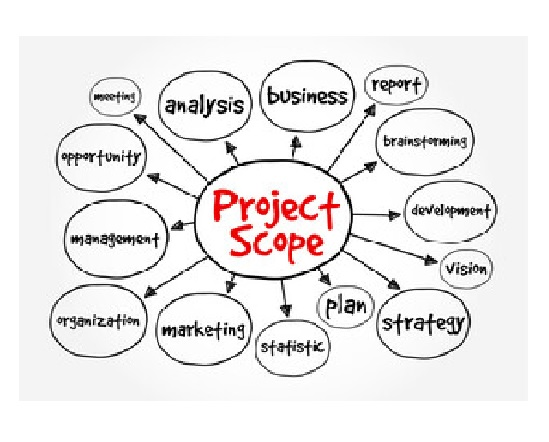
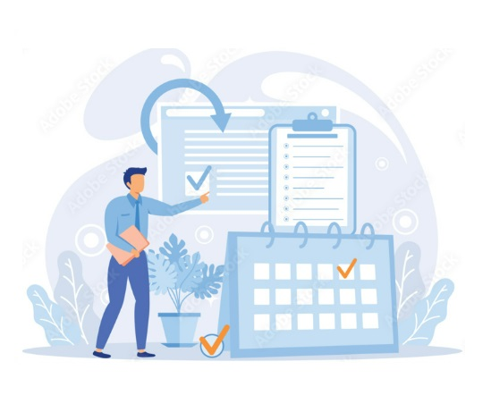
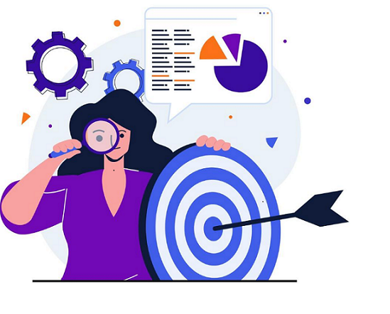
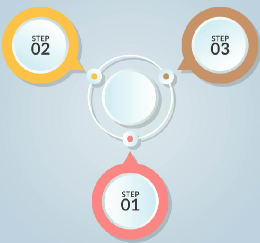

Project management is essential for several reasons, and it fulfills various needs and requirements in the successful execution of projects. Here are some key reasons why project management is needed
Learn MoreProject Management is the discipline of planning, organizing, and managing resources to successfully complete a project within specific constraints, such as time, budget, scope, and quality. They play a pivotal role in ensuring that the project is delivered on time, within budget.
Learn More
The Project Management Triangle, also known as the Triple Constraint or Iron Triangle, is a fundamental concept in project management that illustrates the interrelationship between three key project constraints: Time, Cost, and Scope.
Learn MoreProject Scope refers to the detailed definition of the work that needs to be accomplished to deliver a project's objectives, deliverables, and outcomes. It outlines the boundaries of the project and defines what is included and excluded from the project's scope. The project scope is a critical aspect of project planning as it sets the foundation for all project activities, estimates, and resources allocation. A well-defined scope ensures that the project team and stakeholders have a clear understanding of what needs to be done and what the project's end result will be.
Learn More